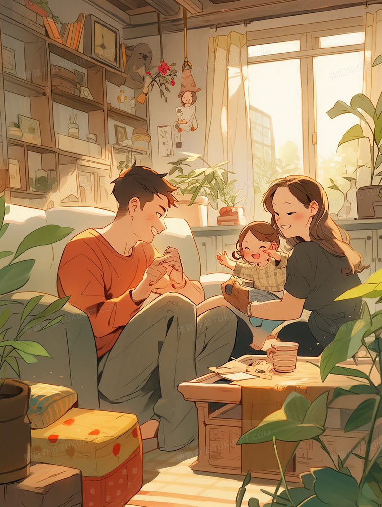

你好，你最敬佩谁
你了解他/她吗
你知道他/她的经历吗
今天是2000.1.1，你降生了
见到的第一眼是爽朗的父母，他们微笑着 看着你
你记得他们的教诲
......
过了很久，你遇见了一件小事，朋友找你出去玩，但是你想在家帮母亲分担工作
你，将如何抉择
（之前玩过一款人生模拟器，很简单的小游戏，二十分钟走完了它的人生，但都是作为父母的角色，虽然只有二十分钟的父母体验卡，但也让我了解到一些父母的不易。所以想做一个小游戏，以各种各样角色的完整故事情节，面对每一次选择，你和他又会做出什么决定，以众生的千面去丈量脚下的土地，让世界更能感同身受，传递下一份温情）
（第二个原因呢，是阶层间的流动太少，农民对乡村熟悉，城市居民对城市熟悉，双方不了解对方的世界，所以我想让在不同领域闪闪发光的大家看到这世间的每一面）
（第一个想尝试袁隆平爷爷的经历）